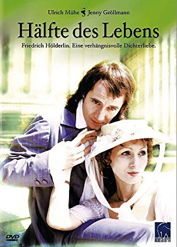
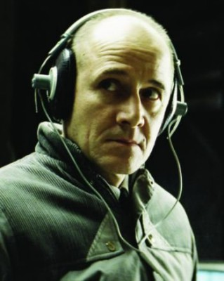
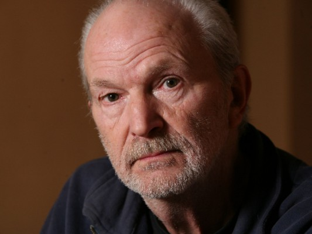
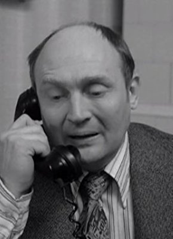

#9108 Hälfte des Lebens
 
 IMDB-Wertung: 6.6 / 10
IMDB-Wertung: 6.6 / 10  Metascore: 0
Metascore: 0 
Ten decisive years (1796 - 1806) in the life of the great German poet Friedrich Hölderlin. In order to earn money as a tutor "Hölder" moves in with the Gontards, a banker's family in Frankfurt, and gives lessons to the four children of the wealthy household. It doesn't take long for him to discover his passion for the children's mother, Susette Gontard. Ordinary family life is obstructed even further by news from the French Revolution.
Jahr: 1985
Dauer: 93 Minuten
FSK: 12
Land: Ost-Deutschland Studio: DEFATonspuren:
Untertitel:
Auflösung: 1080p (1440x1080) Größe: 4096 MB
Genre: Drama, Liebe, Geschichte, Biographie
Regisseur: Herrmann Zschoche
Drehbuch: Elizabeth Berger
Soundtrack: Georg Katzer
Darsteller:
-  Ulrich Mühe als Johann Friedrich Hölderlin
- Jenny Gröllmann als Susette Gontard
-  Michael Gwisdek als Jakob Gontard
-  Rolf Hoppe als
- Frank-Otto Schenk als
- Swetlana Schönfeld als Marie Rätzer
- Peter-Mario Grau als Isaac von Sinclair
- Christine Gloger als Hölderlins Mutter
- Simone Frost als
- Christine Harbort als
- Reimar J. Baur als
- Matthias Günther als
- Hilmar Baumann als
- Peter Bause als
- Trude Brentina als
- Thomas Gumpert als
- Gerd Michael Henneberg als
- Susanne Lüning als
- Friedrich Mokross als
- Willi Schrade als
- Andreas Schumann als
- Nele Gebhard als Kind
- Anja Hering als Kind
- Marco Katzer als Kind
- Katrin Löffler als Kind
- Horst Giese als
- Harry Küster als
Datei: X:\1985\Hälfte des Lebens (1985, FSK12, 1440x1080).mkv seit 19.07.2018
Festplatte: HD 1980-1986
 Es gibt insgesamt 43 Filme in der Gruppe '1985'
Es gibt insgesamt 43 Filme in der Gruppe '1985'